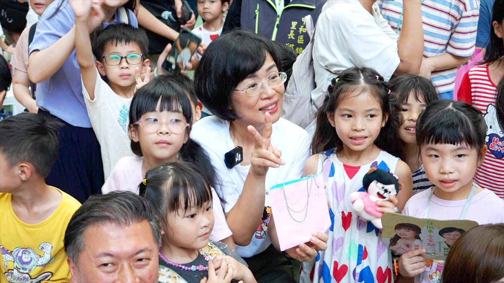
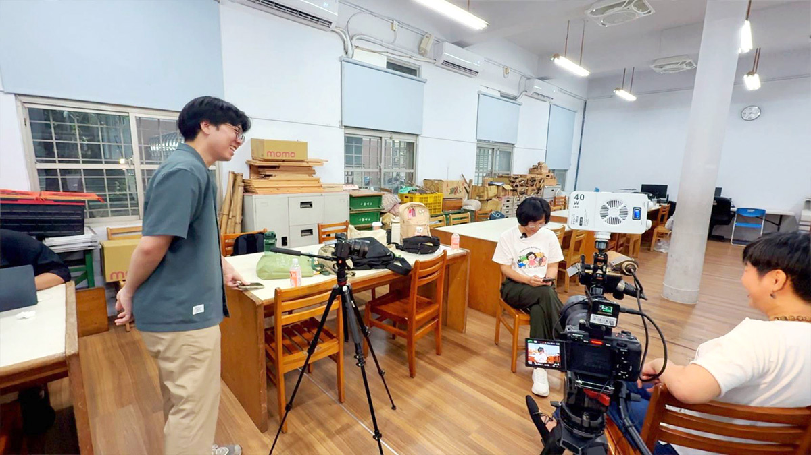
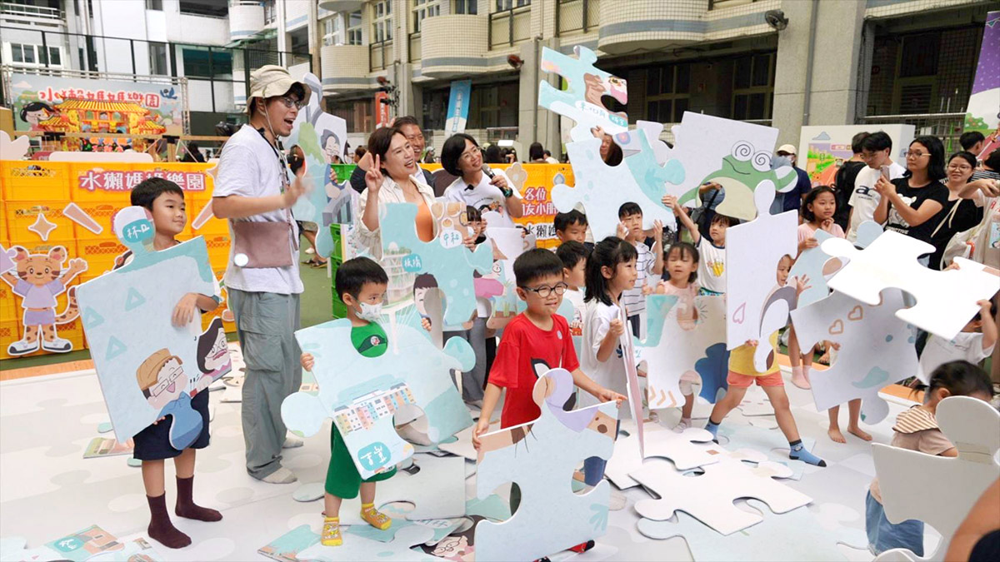
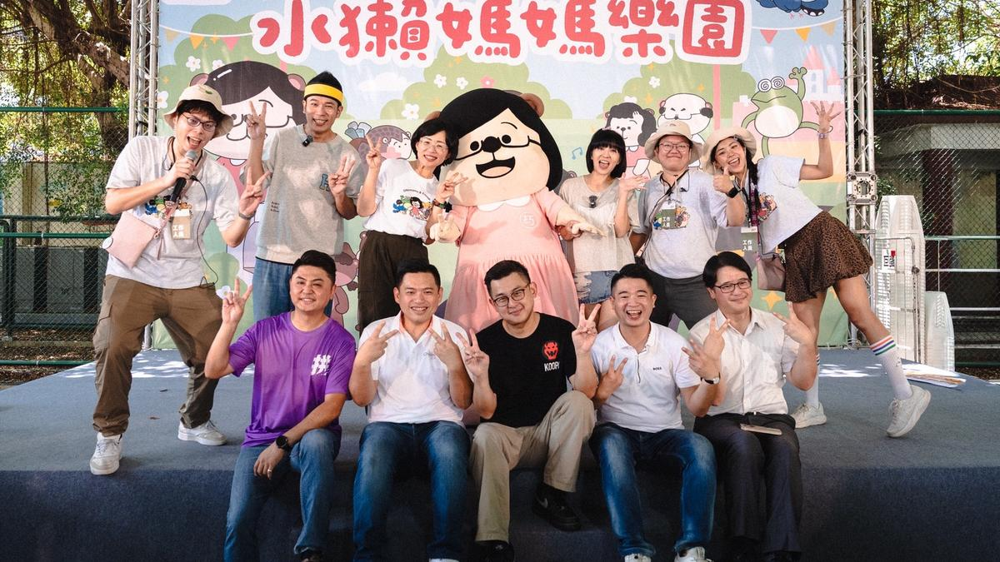
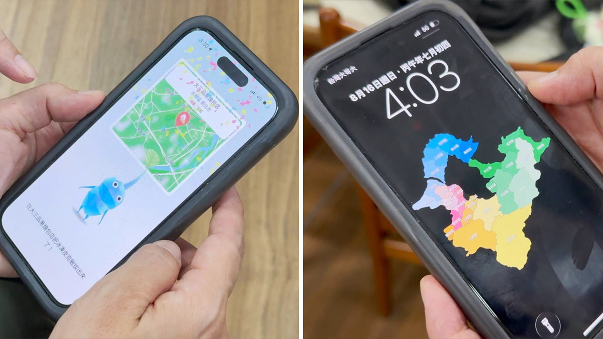

她的城市考題
◎ 報導／呂佳頴
◎ 攝影／柯勝雄
2026年8月
水獺媽媽樂園中和場＠中和國小操場
要選舉的人行程很多，甚至前一刻都還在挪動下一個行程，這些我們都知道，但知道和真的坐上車，是兩回事。
8月這天，我們上了蘇巧慧的車。一個想當新北市長的人，拿什麼證明自己已經跑過新北好幾圈？行程表？照片？還是一天跑了18場後的沙啞嗓音？這些她都有。但最讓人眼睛一亮的，是她的皮克敏。
「妳看⋯⋯都是腳印。不是只有一天，是每天喔！」她拿著手機說。她玩得很認真，玩到要「課金」（源自日文，意指花錢買道具），也玩到忘記睡覺。幕僚還忍不住提醒：「少玩一點！」這時，瞥見她的手機桌布，不是形象照，也不是全家福，而是一張「新北29區」的地圖。這兩張地圖都說明，她的確跑得很勤。但跑過新北，等於看懂新北嗎？
▲ 我們坐上了蘇巧慧的車，在車上空間裡，不管是公事、家事，她都侃侃而談。（圖／柯勝雄攝）
會上她的車，得從不斷變動的行程說起。前幾天說板橋，隔天變土城，最後確定從新莊出發。那乾脆一起上車，看看為何會這樣變。
「一天大概5個小時在車上。」新北幅員大，移動都是時間。她選車除了安全，後座還要能夠放平，才能稍微「瞇」（睡）一下。這天，我們要去水獺媽媽樂園的中和場。
「大姐，現場同仁要彙報狀況。」幕僚張哲偉話才說完，她電話就響了。「先聯訪。」、「我已經晚5分鐘了喔？」、「這個場地的通風，跟上次比起來如何？」問題一個接著一個。
「如果現場已經延遲，家長和孩子開始焦躁，要先安撫；如果大家玩得正開心，就要接住熱情，把氣氛再往上推。這些都會影響上台後說話的語氣和內容。」蘇巧慧不是只想著自己要說什麼，而是先判斷，現場的人現在需要聽什麼。
「妳治軍嚴明欸！」面對我的話，她「嗯」了一聲，微微點頭。 一切盡在不言中。這和爸爸蘇貞昌很像，都是盯得很細的老闆。這樣的人應該有點兇，但團隊不叫她老闆，也不叫她委員，而是叫她「大姐」。幕僚說，她在家排行老大，有種會照顧人的大姐性格。蘇巧慧在旁邊笑著說：「對，這是真的。」
她以前也是助理，和辦公室這群人一起長大，幕僚跟著兩個妹妹叫她「大姐」。久了以後，不分先來後到，辦公室裡就沒人叫她委員或老闆。而她帶團隊，和帶孩子差不多。都不要求拿99分，但要看見認真和態度。「價值不能變，底線不能破。其他的自由發展。」她說蘇貞昌從小就這樣管教她。

▲ 蘇巧慧在家排行老大，也很會照顧人，久而久之，辦公室裡成員都叫她「大姐」。（圖／柯勝雄攝）
很多人提起蘇巧慧，第一印象仍是「蘇貞昌的女兒」。她不迴避：「我是衝衝衝的女兒；但我是會會會，加起來就是更會衝。」接著，她開始爆爸爸的料。爸爸生氣時，根本不用連名帶姓叫她。只要察覺氣氛不對，她早已乖得像「鵪鶉」，她還縮起肩膀，發出「咕咕咕」的聲音，跟鴿子一樣。
但下班回家的蘇貞昌，又是另一個模樣。她說著手也開始比畫：爸爸在家會「推桿」。但不是打小白球，是拿著拖把拖地，先乾拖一次，再濕拖一次，拖到滿頭大汗。
「現在懂爸爸為什麼要拖地，因為需要紓壓。」她現在跑完一天行程，晚上回到家，有時也會做家事。前陣子有篇社群貼文，寫她先生和兩個孩子為了洗碗僵持不下。最後，是晚上十點回家的她，把碗洗了。
都這麼累了，回家還要洗碗，不生氣嗎？蘇巧慧直說不會。因為先生已經分擔很多家務，也負責接送孩子；孩子有自己的課業。每個人都在不同的位置上努力，「沒有誰比誰辛苦。」她還說，回家洗澡，拿到一條香噴噴、剛烘好的毛巾，那很幸福，因為那條毛巾，是女兒洗的。「就大家互相啦！」
爸爸用拖地離開工作，她用洗碗回到生活。至於在兩個行程之間，她還有另一種喘息方式——皮克敏（任天堂2021年推出的散步手機遊戲）。
幕僚吐槽，有時跟她簡報，會發現她心思在皮克敏上。她尷尬地問：「聽得出我在玩喔！」
快到水獺媽媽樂園時，蘇巧慧又點開皮克敏。正想玩一下，車子已經到了，議員也站在下車處等她。她只好收起手機，我安慰：「沒關係，等一下再玩。」
結果到了現場，她還是在玩。只是手機裡的皮克敏，換成眼前一群孩子。「防災包裡要放什麼？」台上的蘇巧慧問。礦泉水要不要？Switch要不要？衛生紙要不要？孩子們一邊搶答，一邊把災害發生時真正需要的東西放進防災包裡。
接著是台語。刷牙的台語怎麼說？不是「刷牙齒」，而是「洗嘴」。她形容「刷牙齒」像有一群小工人在嘴巴裡刷刷刷，台下的孩子笑成一片。
防災、台語、海洋廢棄物，和新北地理，都被她拆開來，變成一關又一關的遊戲。爸爸、媽媽原本只在一旁陪著，後來自己也跟著緊張。過關後才發現，防災包該放什麼、海洋廢棄物怎麼分類，連大人也記住了。
蘇巧慧最早辦親子活動，是因為自己的孩子還小。政治攻防是工作，和孩子相處則是生活。但一天只有24小時，既想工作，也想陪孩子，乾脆把兩件事放在一起。後來發現，年輕父母不是只缺育兒補助，還想給孩子好的成長環境，但找教材、判斷內容、安排活動，很累人。她便找人把知識整理好，設計成遊戲，再送到孩子面前。「爸爸媽媽只要把孩子帶來就好。」最後，全部一起玩了進去。

▲ 新北大拼圖，29區各自有亮點，讓小朋友在遊戲中了解自己城市的特色。蘇巧慧試著把政策變成活動，把素養變成遊戲，讓親子玩中學、學中玩。（圖／柯勝雄攝）
水獺媽媽樂園裡，有張大型的新北地圖。她希望29區長大的孩子，都能以自己的地方為傲。貢寮的孩子，以貢寮為榮、萬里的孩子，知道海風是冷的還是暖的、三重的孩子，知道工廠什麼時候開始噹噹作響。
她想教孩子認識的，不只是一個行政區，而是自己生長的地方。這也回到她對新北的理解。幾百年前渡海而來的人、戰後落腳的家庭、近年來自東南亞的新住民，以及從中南部北漂的年輕人，都在新北留下自己的味道。
像永和，吃得到台南的黑白切，也有四川的辣渣。這種混雜，不整齊，卻是新北才有的「氣口」（台語：指說話口氣和個人胃口）。長久以來，新北被看成台北的「蛋白」區。新北就像一座繞著台北轉的衛星城市。她想讓衛星變繁星，不是只有一個中心發亮，而是29區都能被看見。這解釋了她為什麼把城市願景放進孩子的遊戲裡。
城市認同不是選舉時喊一句「我愛新北」就會出現。它是孩子從小知道，自己地方的故事；是住在這裡的人，不必借用台北來證明自己的價值。

▲ 蘇巧慧主持《水獺媽媽巧巧話》Podcast，至今已讀過374個童書故事；延伸出的「水獺媽媽樂園」也深受親子喜愛，讓孩子在遊戲裡認識防災、台語、新北地理等內容。（圖/蘇巧慧辦公室提供）
但一座城市，不能只靠故事治理，有人質疑她只會做軟性的事。「水獺媽媽樂園是玩中學、學中玩。」她說在辦活動背後，她早已協助蓋火車站、堤外便道與人行道，別看大家玩得開心，就說她只會辦活動。
至於新北的城市問題，她要成立「都更局」，以單一窗口加快審查，也想處理老公寓加裝電梯時，一樓住戶不願犧牲空間的難題。最有意思的是，她談自行車。「自行車道不能只讓人騎過去，而是讓人停下來。」有安全的停車架和打氣站，大家才願意停下來拍照、吃東西、買東西，才能有商機。
她的硬體思維從人開始。沒只問工程怎麼完成，也問完成之後，人怎麼使用。硬體建設當然要繼續，但她覺得，新北走到現在，得累積自己的軟實力。因為城市的競爭力，不只是一條路、一棟建築或一座車站，還包括住在這裡的人，是否認同自己生活的地方。
一個市長要面對預算、組織、土地、利益衝突，以及那些無法靠一場好玩的活動化解的反對聲音。蘇巧慧很會走進人群 ; 也很會把艱難的事情，變成比較容易入口的語言。她想讓新北被看見。但城市不是只有亮起來就好，城市也要被整合、被決定、被推進，還要處理那些不漂亮、不好玩、也不容易說成故事的問題。

▲ 蘇巧慧的手機有兩張新北地圖。一張是手機桌布，實體的新北29區，一張在皮克敏裡，是她走過的路。（圖／柯勝雄攝）
皮克敏的地圖上，留下她走過的腳印、手機桌布裡的新北地圖，放著她想讓29區一起發亮的想像。跑遍新北，是不是等於看懂新北 ? 再來就是那些腳印，最後能不能走成一座城市的未來？這是她要去說服人的地方。